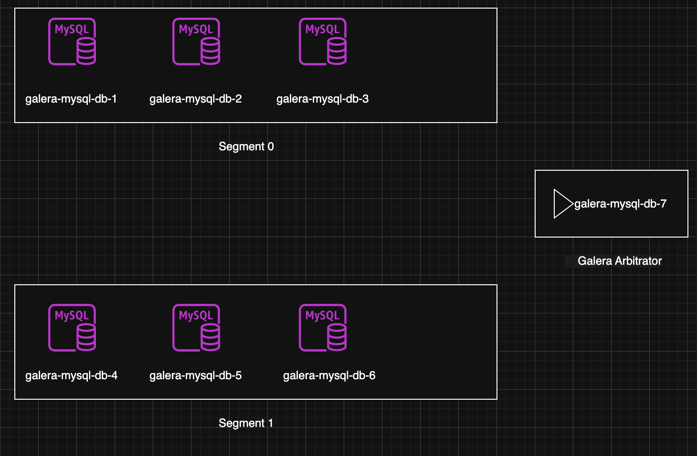
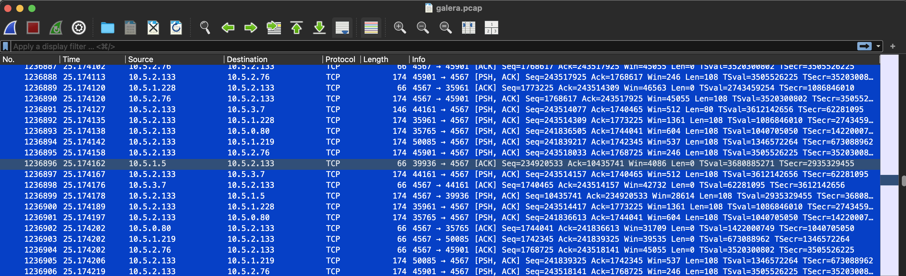

Article intro
Today, I will write an article about what I have been doing with Galera MySQL for testing fault tolerance and self-healing behavior of MySQL Galera Cluster.
Assumed you have MySQL Galera cluster installed, so I don't need to guide from begin!

Lab Information:
# Cluster 1 - segment 0
10.5.1.5 mysql-galera-db-1
10.5.3.7 mysql-galera-db-2
10.5.1.228 mysql-galera-db-3
# Cluster 2 - segment 1
10.5.0.80 mysql-galera-db-4
10.5.2.76 mysql-galera-db-5
10.5.1.219 mysql-galera-db-6
# Garbd
10.5.2.133 mysql-galera-db-7
Quick Intro: MySQL Galera Cluster
MySQL Galera Cluster is a multi-master, synchronous replication solution providing high availability and data consistency across nodes. It uses WSREP API and quorum-based voting to maintain cluster integrity. Key components:
- Nodes: Active database instances (read/write)
- Galera Arbitrator (garb): Lightweight arbitrator for quorum in even-node setups
Lab 1: Isolate Segment 1 → Write 1M Records to Segment 0 → Rejoin Segment 1
Test split-brain prevention, quorum, and IST/SST recovery.
Lab 2: Block Traffic Between Segment 0 & 1 (Garb Still Reachable)
Validate Garb’s role in quorum decision during partial network partition.
Lab 3: Simulate Unstable Network with TC (Packet Loss, Latency, Reorder)
Use Linux Traffic Control (tc) – built-in, powerful, zero-install – to inject
loss(e.g. 5%)delay(jitter) (e.g. 200ms ± 50ms)
Quick Monitor
Tools/CLI will use during lab: sysbench, tc, iptables, systemctl, journalctl
root@mysql-galera-db-3:~# mysql -e "show global status where Variable_name rlike 'wsrep_(ready|connected|cluster_size|local_state_comment|local_recv_queue_avg|flow_control_paused|cluster_status)';"
+------------------------------+-----------+
| Variable_name | Value |
+------------------------------+-----------+
| wsrep_local_recv_queue_avg | 0.0182108 |
| wsrep_flow_control_paused_ns | 0 |
| wsrep_flow_control_paused | 0 |
| wsrep_local_state_comment | Synced |
| wsrep_cluster_size | 7 |
| wsrep_connected | ON |
| wsrep_cluster_status | Primary |
| wsrep_ready | ON |
+------------------------------+-----------+
Variable explain:
- wsrep_local_recv_queue_avg: weight of receive. Should be lower than 1.0 (if its high, equal to lagging)
- wsrep_flow_control_paused : Flow control - signal that node is slowing. Should be equal to 0 (0.0 - 1.0, if > 0.1 = problems!)
- wsrep_local_state_comment, wsrep_cluster_status, wsrep_cluster_size : cluster status
- wsrep_cluster_status: Should be "Primary"
- wsrep_ready: Should be "ON"
- wsrep_cluster_conf_id: This is interesting metric, for every node join/leave, quorum loss & recovery, network issues, this will be increased. If number increasing way too fast -> big problem!
Lab 1: Isolate Segment 1 → Write 1M Records to Segment 0 → Rejoin Segment
Status before graceful shutdown.
root@mysql-galera-db-1:~# mysql -e "SHOW STATUS LIKE 'wsrep_cluster_%';"
+----------------------------+--------------------------------------+
| Variable_name | Value |
+----------------------------+--------------------------------------+
| wsrep_cluster_weight | 7 |
| wsrep_cluster_capabilities | |
| wsrep_cluster_conf_id | 75 |
| wsrep_cluster_size | 7 |
| wsrep_cluster_state_uuid | 2730e7d3-ae4e-11f0-a3f7-f290a6348920 |
| wsrep_cluster_status | Primary |
+----------------------------+--------------------------------------+
After shutdown whole segment 1. (systemctl stop mysql on node 4,5,6)
root@mysql-galera-db-1:~# mysql -e "SHOW STATUS LIKE 'wsrep_cluster_%';"
+----------------------------+--------------------------------------+
| Variable_name | Value |
+----------------------------+--------------------------------------+
| wsrep_cluster_weight | 4 |
| wsrep_cluster_capabilities | |
| wsrep_cluster_conf_id | 78 |
| wsrep_cluster_size | 4 |
| wsrep_cluster_state_uuid | 2730e7d3-ae4e-11f0-a3f7-f290a6348920 |
| wsrep_cluster_status | Primary |
+----------------------------+--------------------------------------+
Start process 1M record:
root@mysql-galera-db-1:~# sysbench oltp_read_write --mysql-db=test --mysql-user=root --mysql-password=123123 --table-size=1000000 prepare
sysbench 1.0.20 (using system LuaJIT 2.1.0-beta3)
Creating table 'sbtest1'...
Inserting 1000000 records into 'sbtest1'
Creating a secondary index on 'sbtest1'...
root@mysql-galera-db-1:~# mysql -e "select count(*) from test.sbtest1"
+----------+
| count(*) |
+----------+
| 1000000 |
+----------+
Start all mysql in segment 1 which was shutdown and check the result for data sync.
root@mysql-galera-db-4:~# mysql -e "SHOW STATUS LIKE 'wsrep_cluster_%';"
+----------------------------+--------------------------------------+
| Variable_name | Value |
+----------------------------+--------------------------------------+
| wsrep_cluster_weight | 7 |
| wsrep_cluster_capabilities | |
| wsrep_cluster_conf_id | 81 |
| wsrep_cluster_size | 7 |
| wsrep_cluster_state_uuid | 2730e7d3-ae4e-11f0-a3f7-f290a6348920 |
| wsrep_cluster_status | Primary |
+----------------------------+--------------------------------------+
root@mysql-galera-db-4:~# mysql -e "select count(*) from test.sbtest1"
+----------+
| count(*) |
+----------+
| 1000000 |
+----------+
Scenario above was using graceful shutdown, how about ungraceful shutdown (with pkill -9 mysql)?
Nodes in segment 1 doesn't send state transfer, Nodes in segment 0 have no idea if nodes in segment 1 died or network partition. Galera see 3 nodes gone -> suspicion of split-brain -> change to non-primary to avoid 2 segment write together.
root@mysql-galera-db-1:~# mysql -e "SHOW STATUS LIKE 'wsrep_cluster_%';"
+----------------------------+--------------------------------------+
| Variable_name | Value |
+----------------------------+--------------------------------------+
| wsrep_cluster_weight | 0 |
| wsrep_cluster_capabilities | |
| wsrep_cluster_conf_id | 18446744073709551615 |
| wsrep_cluster_size | 1 |
| wsrep_cluster_state_uuid | 2730e7d3-ae4e-11f0-a3f7-f290a6348920 |
| wsrep_cluster_status | non-Primary |
+----------------------------+--------------------------------------+
Cluster only can recover when nodes in segment 1 start again, this is unrealistic, therefore we will go to next case.
Lab 2: Block Traffic Between Segment 0 & 1 (Garb Still Reachable)
# Do this in 3 node of segment 1
iptables -A INPUT -s 10.5.1.5 -j DROP
iptables -A INPUT -s 10.5.3.7 -j DROP
iptables -A INPUT -s 10.5.1.228 -j DROP
iptables -A OUTPUT -d 10.5.1.5 -j DROP
iptables -A OUTPUT -d 10.5.3.7 -j DROP
iptables -A OUTPUT -d 10.5.1.228 -j DROP
# Do this in 3 node of segment 0
iptables -A INPUT -s 10.5.0.80 -j DROP
iptables -A INPUT -s 10.5.2.76 -j DROP
iptables -A INPUT -s 10.5.1.219 -j DROP
iptables -A OUTPUT -d 10.5.0.80 -j DROP
iptables -A OUTPUT -d 10.5.2.76 -j DROP
iptables -A OUTPUT -d 10.5.1.219 -j DROP
root@mysql-galera-db-4:~# iptables -L -n -v
Chain INPUT (policy ACCEPT 632K packets, 289M bytes)
pkts bytes target prot opt in out source destination
28 2280 DROP 0 -- * * 10.5.1.5 0.0.0.0/0
29 1920 DROP 0 -- * * 10.5.3.7 0.0.0.0/0
33 5156 DROP 0 -- * * 10.5.1.228 0.0.0.0/0
Chain FORWARD (policy ACCEPT 0 packets, 0 bytes)
pkts bytes target prot opt in out source destination
Chain OUTPUT (policy ACCEPT 551K packets, 659M bytes)
pkts bytes target prot opt in out source destination
33 11216 DROP 0 -- * * 0.0.0.0/0 10.5.1.5
53 35948 DROP 0 -- * * 0.0.0.0/0 10.5.3.7
33 8448 DROP 0 -- * * 0.0.0.0/0 10.5.1.228
root@mysql-galera-db-5:~# iptables -L -n -v
Chain INPUT (policy ACCEPT 644K packets, 688M bytes)
pkts bytes target prot opt in out source destination
52 7560 DROP 0 -- * * 10.5.1.5 0.0.0.0/0
46 2940 DROP 0 -- * * 10.5.3.7 0.0.0.0/0
46 2940 DROP 0 -- * * 10.5.1.228 0.0.0.0/0
Chain FORWARD (policy ACCEPT 0 packets, 0 bytes)
pkts bytes target prot opt in out source destination
Chain OUTPUT (policy ACCEPT 501K packets, 50M bytes)
pkts bytes target prot opt in out source destination
59 33164 DROP 0 -- * * 0.0.0.0/0 10.5.1.5
81 67768 DROP 0 -- * * 0.0.0.0/0 10.5.3.7
57 33208 DROP 0 -- * * 0.0.0.0/0 10.5.1.228
root@mysql-galera-db-6:~# iptables -L -n -v
Chain INPUT (policy ACCEPT 696K packets, 691M bytes)
pkts bytes target prot opt in out source destination
48 10444 DROP 0 -- * * 10.5.1.5 0.0.0.0/0
46 12344 DROP 0 -- * * 10.5.3.7 0.0.0.0/0
46 11364 DROP 0 -- * * 10.5.1.228 0.0.0.0/0
Chain FORWARD (policy ACCEPT 0 packets, 0 bytes)
pkts bytes target prot opt in out source destination
Chain OUTPUT (policy ACCEPT 607K packets, 68M bytes)
pkts bytes target prot opt in out source destination
153 181K DROP 0 -- * * 0.0.0.0/0 10.5.1.5
176 213K DROP 0 -- * * 0.0.0.0/0 10.5.3.7
152 179K DROP 0 -- * * 0.0.0.0/0 10.5.1.228
After that, check cluster status. We still see it has 7 nodes, which mean garb still see 2 segments and cluster_size still equal to 7.
root@mysql-galera-db-1:~# mysql -e "SHOW STATUS LIKE 'wsrep_cluster_%';"
+----------------------------+--------------------------------------+
| Variable_name | Value |
+----------------------------+--------------------------------------+
| wsrep_cluster_weight | 7 |
| wsrep_cluster_capabilities | |
| wsrep_cluster_conf_id | 7 |
| wsrep_cluster_size | 7 |
| wsrep_cluster_state_uuid | 0e38a58c-aff7-11f0-b1f0-6ee869c6a893 |
| wsrep_cluster_status | Primary |
+----------------------------+--------------------------------------+
root@mysql-galera-db-4:~# mysql -e "SHOW STATUS LIKE 'wsrep_cluster_%';"
+----------------------------+--------------------------------------+
| Variable_name | Value |
+----------------------------+--------------------------------------+
| wsrep_cluster_weight | 7 |
| wsrep_cluster_capabilities | |
| wsrep_cluster_conf_id | 7 |
| wsrep_cluster_size | 7 |
| wsrep_cluster_state_uuid | 0e38a58c-aff7-11f0-b1f0-6ee869c6a893 |
| wsrep_cluster_status | Primary |
+----------------------------+--------------------------------------+
Check with ping, check port in random node
root@mysql-galera-db-5:~# nc -vz -w 1 mysql-galera-db-1 4567
nc: connect to mysql-galera-db-1 (10.5.1.5) port 4567 (tcp) timed out: Operation now in progress
root@mysql-galera-db-5:~# ping -w 1 mysql-galera-db-1
PING mysql-galera-db-1 (10.5.1.5) 56(84) bytes of data.
--- mysql-galera-db-1 ping statistics ---
1 packets transmitted, 0 received, 100% packet loss, time 0ms
-----------------------------------------------------
root@mysql-galera-db-1:~# nc -vz -w 1 mysql-galera-db-5 4567
nc: connect to mysql-galera-db-5 (10.5.2.76) port 4567 (tcp) timed out: Operation now in progress
root@mysql-galera-db-1:~# ping -w 1 mysql-galera-db-5
PING mysql-galera-db-5 (10.5.2.76) 56(84) bytes of data.
--- mysql-galera-db-5 ping statistics ---
1 packets transmitted, 0 received, 100% packet loss, time 0ms
Hmm, test with 1 more node to make sure we are going in right way
root@mysql-galera-db-2:~# nc -vz -w 1 mysql-galera-db-4 4567
nc: connect to mysql-galera-db-4 (10.5.0.80) port 4567 (tcp) timed out: Operation now in progress
root@mysql-galera-db-2:~# ping -w 1 mysql-galera-db-4
PING mysql-galera-db-4 (10.5.0.80) 56(84) bytes of data.
--- mysql-galera-db-4 ping statistics ---
1 packets transmitted, 0 received, 100% packet loss, time 0ms
Ok, Let's create new database for data synchronization
# Node 1 (segment 0)
mysql> create database test1;
Query OK, 1 row affected (0.01 sec)
mysql> create database test2;
Query OK, 1 row affected (0.01 sec)
------------------------------------
# Node 5 (segment 1)
root@mysql-galera-db-5:~# mysql -e "create database test3"
root@mysql-galera-db-5:~# mysql -e "create database test4"
root@mysql-galera-db-5:~# mysql -e "show databases"
+--------------------+
| Database |
+--------------------+
| information_schema |
| mysql |
| performance_schema |
| sys |
| test1 |
| test2 |
| test3 |
| test4 |
+--------------------+
Test write in node 1
root@mysql-galera-db-1:~# sysbench oltp_read_write --mysql-db=test2 --mysql-user=root --mysql-password=123123 --table-size=2000000 prepare
sysbench 1.0.20 (using system LuaJIT 2.1.0-beta3)
Creating table 'sbtest1'...
Inserting 2000000 records into 'sbtest1'
Creating a secondary index on 'sbtest1'...
Check data in node 2
root@mysql-galera-db-4:~# mysql -e "select count(*) from test2.sbtest1;"
+----------+
| count(*) |
+----------+
| 2000000 |
+----------+
This part will surely have the question of why right? The answer is node garb, it took a little time to prove. First is to check traffic via tcpdump, this is when tcpdump is turned on when node 1 insert.
root@mysql-galera-db-7:~# tcpdump -i eth0 port 4567 -w galera.pcap
tcpdump: listening on eth0, link-type EN10MB (Ethernet), snapshot length 262144 bytes
^C2147624 packets captured
2148191 packets received by filter
0 packets dropped by kernel
root@mysql-galera-db-7:~# ls -lh
total 2.6G
-rw-r--r-- 1 tcpdump tcpdump 2.6G Oct 24 09:34 galera.pcap
Quite heavy, open Wireshark then open the tcpdump file.

Looking confused and not understanding much, I should probably do the wireshark course =_=. However, if it's difficult, ask, and here is the answer
Based on this tcpdump data, I analyze as follows, I copy this from Claude AI xD
Key Observation
Node 10.5.2.133 is acting as a clear relay/coordinator.
Communication Pattern:
- 10.5.2.133 receives data from many nodes (10.5.2.76, 10.5.1.5, 10.5.1.228, 10.5.3.7, 10.5.0.80, 10.5.1.219)
- Then broadcast/forward to ALL other nodes
- All using port 4567 (destination port)
Evidence of relay behavior:
- Frame 1236874-1236875: 10.5.2.133 sends data to 10.5.2.76 (80+108 bytes)
- Frame 1236876: 10.5.2.133 sends data to 10.5.1.5 (108 bytes)
- Frame 1236879: 10.5.2.133 sends data to 10.5.3.7 (108 bytes)
- Frame 1236880: 10.5.2.133 sends data to 10.5.1.228 (108 bytes)
- Frame 1236881: 10.5.2.133 sends data to 10.5.0.80 (108 bytes)
- Frame 1236882: 10.5.2.133 sends data to 10.5.1.219 (108 bytes)
Data size pattern:
- Majority: 108 bytes payload (may be standard message size)
- Occasional: 80 bytes (may be ACK or heartbeat)
- Base TCP overhead: 66 bytes (pure ACK)
Timing analysis:
- All events occur in ~0.1 seconds (from 25.174043 → 25.174227)
- Node 10.5.2.133 sends messages almost simultaneously to all nodes
- Latency is very low, indicating this is a local network
Conclusion
10.5.2.133 is definitely a relay/hub node, not just participating in voting.
Well of course there must be evidence since I used explanation from AI. First is this article: http://blog.yannickjaquier.com/mariadb/galera-arbitrator-as-an-odd-node-in-galera-cluster.html (search keyword relay)
Reality on node garb
root@mysql-galera-db-7:/var/log# cat garbd.log |grep -i relay
2025-10-23 17:02:33.870 INFO: (6325ebf1-9e99, 'tcp://10.5.2.133:4567') turning message relay requesting off
2025-10-23 17:02:44.767 INFO: (6325ebf1-9e99, 'tcp://10.5.2.133:4567') turning message relay requesting on, nonlive peers: tcp://10.5.0.80:4567
2025-10-23 17:02:47.871 INFO: (6325ebf1-9e99, 'tcp://10.5.2.133:4567') turning message relay requesting off
2025-10-23 17:03:17.872 INFO: (6325ebf1-9e99, 'tcp://10.5.2.133:4567') turning message relay requesting off
2025-10-23 17:03:34.873 INFO: (6325ebf1-9e99, 'tcp://10.5.2.133:4567') turning message relay requesting off
2025-10-23 17:32:49.280 INFO: (9d377f5a-9e1b, 'tcp://10.5.2.133:4567') turning message relay requesting off
2025-10-23 17:33:50.779 INFO: (c1df7af4-ac85, 'tcp://10.5.2.133:4567') turning message relay requesting off
2025-10-23 17:34:44.237 INFO: (e1bc7bfa-8f5d, 'tcp://10.5.2.133:4567') turning message relay requesting off
2025-10-23 17:43:04.498 INFO: (0bea5770-a3e5, 'tcp://10.5.2.133:4567') turning message relay requesting off
2025-10-23 17:44:23.824 INFO: (0bea5770-a3e5, 'tcp://10.5.2.133:4567') turning message relay requesting on, nonlive peers: tcp://10.5.1.5:4567
2025-10-23 17:44:24.816 INFO: (0bea5770-a3e5, 'tcp://10.5.2.133:4567') turning message relay requesting off
2025-10-23 17:44:33.148 INFO: (0bea5770-a3e5, 'tcp://10.5.2.133:4567') turning message relay requesting off
In conclusion, in this case, the network block between segment 0 and 1 can still be synchronized thanks to garb as a relay. Try stopping garb and keeping the block between segment 0 and 1 as is, the result is as follows:
root@mysql-galera-db-7:~# systemctl stop garb
root@mysql-galera-db-1:~# mysql -e "SHOW STATUS LIKE 'wsrep_cluster_%';"
+----------------------------+--------------------------------------+
| Variable_name | Value |
+----------------------------+--------------------------------------+
| wsrep_cluster_weight | 0 |
| wsrep_cluster_capabilities | |
| wsrep_cluster_conf_id | 18446744073709551615 |
| wsrep_cluster_size | 3 |
| wsrep_cluster_state_uuid | 0e38a58c-aff7-11f0-b1f0-6ee869c6a893 |
| wsrep_cluster_status | non-Primary |
+----------------------------+--------------------------------------+
root@mysql-galera-db-6:~# mysql -e "SHOW STATUS LIKE 'wsrep_cluster_%';"
+----------------------------+--------------------------------------+
| Variable_name | Value |
+----------------------------+--------------------------------------+
| wsrep_cluster_weight | 0 |
| wsrep_cluster_capabilities | |
| wsrep_cluster_conf_id | 18446744073709551615 |
| wsrep_cluster_size | 3 |
| wsrep_cluster_state_uuid | 0e38a58c-aff7-11f0-b1f0-6ee869c6a893 |
| wsrep_cluster_status | non-Primary |
+----------------------------+--------------------------------------+
What's next?
Turn on garb node again to test if traffic goes through garb node?
root@mysql-galera-db-7:~# systemctl start garb
root@mysql-galera-db-1:~# mysql -e "SHOW STATUS LIKE 'wsrep_cluster_%';"
+----------------------------+--------------------------------------+
| Variable_name | Value |
+----------------------------+--------------------------------------+
| wsrep_cluster_weight | 0 |
| wsrep_cluster_capabilities | |
| wsrep_cluster_conf_id | 18446744073709551615 |
| wsrep_cluster_size | 7 |
| wsrep_cluster_state_uuid | 0e38a58c-aff7-11f0-b1f0-6ee869c6a893 |
| wsrep_cluster_status | non-Primary |
+----------------------------+--------------------------------------+
Even though there are 7 nodes and iptables has been flushed, the cluster still lost quorum. After trying to restart, I couldn't turn on any node, all reported errors.
2025-10-23T10:36:43.663708Z 0 [System] [MY-000000] [WSREP] P: (1cffc6a5-9efc, 'tcp://0.0.0.0:4567') turning message relay requesting off
2025-10-23T10:36:51.164207Z 0 [ERROR] [MY-000000] [WSREP] P: failed to open gcomm backend connection: 110: failed to reach primary view
at ./gcomm/src/pc.cpp:connect():160
2025-10-23T10:36:51.164260Z 0 [ERROR] [MY-000000] [WSREP] P: ./gcs/src/gcs_core.cpp:gcs_core_open():256: Failed to open backend connection: -110 (Connection timed out)
2025-10-23T10:36:52.164756Z 0 [ERROR] [MY-000000] [WSREP] P: ./gcs/src/gcs.cpp:gcs_open():1701: Failed to open channel 'fpt_id' at 'gcomm://10.5.1.5,10.5.3.7,10.5.1.228': -110 (Connection timed out)
2025-10-23T10:36:52.164796Z 0 [ERROR] [MY-000000] [WSREP] P: gcs connect failed: Operation timed out
2025-10-23T10:36:52.164803Z 0 [ERROR] [MY-000000] [WSREP] wsrep::connect(gcomm://10.5.1.5,10.5.3.7,10.5.1.228) failed: 7
2025-10-23T10:36:52.164809Z 0 [ERROR] [MY-010119] [Server] Aborting
Perform recovery, for example with node1 being the node with the most complete data (highest seqno).
Edit this file /etc/mysql/conf.d/galera.conf then change comment this line: wsrep_cluster_address="gcomm://node1,node2,node3"
Change to safe_to_bootstrap: 1 (I understand this is manually fixed).
root@mysql-galera-db-1:~# cat /var/lib/mysql/grastate.dat
# GALERA saved state
version: 2.1
uuid: 0e38a58c-aff7-11f0-b1f0-6ee869c6a893
seqno: 1234
safe_to_bootstrap: 1
Then start it and check databases
root@mysql-galera-db-1:~# mysql -e "show databases"
+--------------------+
| Database |
+--------------------+
| information_schema |
| mysql |
| performance_schema |
| sys |
| test1 |
| test2 |
| test3 |
| test4 |
+--------------------+
Proceed to turn on other nodes + garb. After turning it on, remember to edit the config in the bootstrap node. If you don't restart it, it's easy to get into trouble, but you don't need to restart node 1. Restarting to confirm is ok.
root@mysql-galera-db-6:~# systemctl start mysql
sleep 10
mysql -e "SHOW STATUS LIKE 'wsrep_cluster_%';"
+----------------------------+--------------------------------------+
| Variable_name | Value |
+----------------------------+--------------------------------------+
| wsrep_cluster_weight | 7 |
| wsrep_cluster_capabilities | |
| wsrep_cluster_conf_id | 6 |
| wsrep_cluster_size | 7 |
| wsrep_cluster_state_uuid | 0e38a58c-aff7-11f0-b1f0-6ee869c6a893 |
| wsrep_cluster_status | Primary |
+----------------------------+--------------------------------------+
# Node 1 after edit mysql config and restart!
root@mysql-galera-db-1:~# mysql -e "SHOW STATUS LIKE 'wsrep_cluster_%';"
+----------------------------+--------------------------------------+
| Variable_name | Value |
+----------------------------+--------------------------------------+
| wsrep_cluster_weight | 7 |
| wsrep_cluster_capabilities | |
| wsrep_cluster_conf_id | 8 |
| wsrep_cluster_size | 7 |
| wsrep_cluster_state_uuid | 0e38a58c-aff7-11f0-b1f0-6ee869c6a893 |
| wsrep_cluster_status | Primary |
+----------------------------+--------------------------------------+
In conclusion, if the connection to garb is lost and the network between the two segments is blocked, recovery must be performed manually. What if only the network between the two segments is blocked and garb is still alive? We will have to check if the data traffic goes through the garb node.
So we will have a question like: How to know which node to enable to bootstrap in case of recovery?
- Document here: https://mariadb.com/docs/galera-cluster/high-availability/recovering-a-primary-component#manual-bootstrap-using-grastate.dat
- The
grastate.datfile is the most important one to determine which node has the latest data and should bootstrap the cluster from that node
The grastate.dat file contains metadata about the node state:
# GALERA saved state
version: 2.1
uuid: 5ee99582-bb8d-11e3-b6c1-3c970e3bf0cb
seqno: -1
safe_to_bootstrap: 1
seqno (sequence number):
- Last transaction number this node committed
- Node with highest seqno = latest data
- If seqno: -1 = node crashed/shutdown not graceful
safe_to_bootstrap:
- 1 = safe to bootstrap
- 0 = should not bootstrap from this node
- Last shutdown node usually has value 1
Correct recovery procedure
Add a link for credibility:
- https://galeracluster.com/documentation/html_docs_remove-wsrep-new-cluster/documentation/crash-recovery.html
- https://mariadb.com/docs/galera-cluster/high-availability/recovering-a-primary-component
# 1. Check grastate.dat on ALL nodes
cat /var/lib/mysql/grastate.dat
# 2. Select the node with the highest seqno
# Example:
# Node A: seqno: 1850
# Node B: seqno: 1848
# Node C: seqno: -1
# => Select Node A
# 3. If all are seqno: -1, use the script check:
mysqld --wsrep-recover
# Output will show:
# Recovered position: 5ee99582-bb8d-11e3-b6c1-3c970e3bf0cb:1850
# 4. Bootstrap from the node with the latest data
# Method 1: Set safe_to_bootstrap = 1 in grastate.dat
vi /var/lib/mysql/grastate.dat
# Change safe_to_bootstrap: 0 to safe_to_bootstrap: 1
# Method 2: Force bootstrap
# Apply to mysql galera community, the guide mainly shows instructions for MariaDB
mysqld_bootstrap
# 5. Start the remaining nodes normally
systemctl start mysql
Lab 3: Simulate Unstable Network with TC (Packet Loss, Latency, Reorder)
Scenario: Simulate a slow network scenario by dropping packages, increasing network latency. We have many tools but the 2 most prominent tools in this are
- tc (Traffic Control) Built-in Linux: available, powerful, no need to install additional
- Comcast: This tool is found on github, 10k5 stars, seems to be stable. https://github.com/tylertreat/comcast
But to keep it simple, I will use tc, whichever is easier is preferred.
TLDR: the output is a bit long, the summary of results here is for lazy people
| Network Condition | Packet Loss | Latency | Jitter | Result |
|-------------------|-------------|---------|---------|--------------|
| **Good** | ≤ 5% | ~50ms | ±10ms | OK |
| **Bad** | ≥ 30% | ~100ms | ±50ms | Cluster die |
| **Common** | ≤ 5% | ~100ms | ±50ms | OK |
Simulate writing to 2 segments continuously with the same DB, basically keycloak uses uuid-v4 as id so multi-write is possible without fear of conflict, so we also test the same case.
# Create DB in any node.
root@mysql-galera-db-1:~# mysql -e "CREATE DATABASE test_failover;"
root@mysql-galera-db-1:~# mysql -e "USE test_failover; CREATE TABLE users (id INT PRIMARY KEY AUTO_INCREMENT, name VARCHAR(50), created_at TIMESTAMP DEFAULT CURRENT_TIMESTAMP);"
# Check in node 4 segment 1
root@mysql-galera-db-4:~# mysql -e "show databases"|grep test_failover
test_failover
Basic tc commands:
### 1. Packet loss (flickering) ###
# Add 10% packet loss on interface eth0
tc qdisc add dev eth0 root netem loss 10%
# Packet loss random 10-30%
tc qdisc add dev eth0 root netem loss 10% 20%
# Delete rule
tc qdisc del dev eth0 root
### 2. Network delay (latency) ###
# Add 100ms delay
tc qdisc add dev eth0 root netem delay 100ms
# Delay 100ms ± 10ms (jitter)
tc qdisc add dev eth0 root netem delay 100ms 10ms
# Delay with distribution
tc qdisc add dev eth0 root netem delay 100ms 20ms distribution normal
### 3.Bandwidth limit ###
# Bandwidth limit 1Mbit
tc qdisc add dev eth0 root tbf rate 1mbit burst 32kbit latency 400ms
### 4. Combine multiple conditions (most realistic) ###
# Packet loss + delay + jitter (like real network)
tc qdisc add dev eth0 root netem loss 5% delay 50ms 10ms
### 5. After testing, must delete.
tc qdisc del dev eth0 root
We will use the combine command to test it to make it look like reality. Setup is recorded at node 1 (segment 0) and node 4 (segment 1).
Explanation: tc qdisc add dev eth0 root netem loss 5% delay 50ms 10ms
- loss 5%: packets will be dropped 5%
- delay 50ms: each packet will be delayed at least 50ms
- jitter 10ms: latency will fluctuate, for example, actual latency will be between 40ms-60ms
Like this:
Packet 1: delay = 50ms + random(-10ms to +10ms) = 45ms
Packet 2: delay = 50ms + random(-10ms to +10ms) = 58ms
Packet 3: delay = 50ms + random(-10ms to +10ms) = 42ms
Packet 4: delay = 50ms + random(-10ms to +10ms) = 60ms
Packet 5: DROPPED (5% packet loss)
while true; due
mysql -e "USE test_failover; INSERT INTO users (name) VALUES ('User $(date +%s)');"
sleep 1
done
### Count at node 2 and node 5 ###
root@mysql-galera-db-2:~# mysql -e "use test_failover; select count(*) from users;"
+----------+
| count(*) |
+----------+
| 116 |
+----------+
root@mysql-galera-db-5:~# mysql -e "use test_failover; select count(*) from users;"
+----------+
| count(*) |
+----------+
| 132 |
+----------+
### Now we will get the scenario where all nodes in segment 1 have network problems. (Loss 5%, dela
# Check at node 4,5,6 to see if it is available
root@mysql-galera-db-4:~# tc qdisc add dev eth0 root netem loss 5% delay 50ms 10ms
root@mysql-galera-db-4:~# tc qdisc show dev eth0
qdisc netem 8001: root refcnt 5 limit 1000 delay 50ms 10ms loss 5%
root@mysql-galera-db-5:~# tc qdisc add dev eth0 root netem loss 5% delay 50ms 10ms
root@mysql-galera-db-5:~# tc qdisc show dev eth0
qdisc netem 8001: root refcnt 5 limit 1000 delay 50ms 10ms loss 5%
root@mysql-galera-db-6:~# tc qdisc add dev eth0 root netem loss 5% delay 50ms 10ms
root@mysql-galera-db-6:~# tc qdisc show dev eth0
qdisc netem 8001: root refcnt 5 limit 1000 delay 50ms 10ms loss 5%
Demo ping: segment 0 → segment 1 with latency 100ms + jitter 50ms
root@mysql-galera-db-3:~# ping mysql-galera-db-4
PING mysql-galera-db-4 (10.5.0.80) 56(84) bytes of data.
64 bytes from mysql-galera-db-4 (10.5.0.80): icmp_seq=1 ttl=64 time=151 ms
64 bytes from mysql-galera-db-4 (10.5.0.80): icmp_seq=2 ttl=64 time=146 ms
64 bytes from mysql-galera-db-4 (10.5.0.80): icmp_seq=3 ttl=64 time=117 ms
64 bytes from mysql-galera-db-4 (10.5.0.80): icmp_seq=4 ttl=64 time=99.6 ms
64 bytes from mysql-galera-db-4 (10.5.0.80): icmp_seq=5 ttl=64 time=110 ms
64 bytes from mysql-galera-db-4 (10.5.0.80): icmp_seq=6 ttl=64 time=91.5 ms
Results after a short time: with 5% dropped packages, no problem. At least that's what the count shows, this is the count after stopping recording at both ends
root@mysql-galera-db-2:~# mysql -e "use test_failover; select count(*) from users;"
+----------+
| count(*) |
+----------+
| 1156 |
+----------+
root@mysql-galera-db-5:~# mysql -e "use test_failover; select count(*) from users;"
+----------+
| count(*) |
+----------+
| 1156 |
+----------+
So with 5% packets dropped, latency is 50ms, Jitter 10ms is not a problem. Try adding 1 higher one and see?
- Packet loss: 30%
- Latency: 100ms
- Jitter: 50ms
# Still updating on nodes in segment 1 (node 4,5,6)
root@mysql-galera-db-4:~# tc qdisc del dev eth0 root
root@mysql-galera-db-4:~# tc qdisc add dev eth0 root netem loss 30% delay 100ms 50ms
root@mysql-galera-db-4:~# tc qdisc show dev eth0
qdisc netem 8002: root refcnt 5 limit 1000 delay 100ms 50ms loss 30%
..............
# Hmmm, just about to write it, it turned into non-Primary
root@mysql-galera-db-1:~# mysql -e "SHOW STATUS LIKE 'wsrep_cluster_%';"
+----------------------------+--------------------------------------+
| Variable_name | Value |
+----------------------------+--------------------------------------+
| wsrep_cluster_weight | 0 |
| wsrep_cluster_capabilities | |
| wsrep_cluster_conf_id | 18446744073709551615 |
| wsrep_cluster_size | 1 |
| wsrep_cluster_state_uuid | 0e38a58c-aff7-11f0-b1f0-6ee869c6a893 |
| wsrep_cluster_status | non-Primary |
+----------------------------+--------------------------------------+
root@mysql-galera-db-4:~# mysql -e "SHOW STATUS LIKE 'wsrep_cluster_%';"
+----------------------------+--------------------------------------+
| Variable_name | Value |
+----------------------------+--------------------------------------+
| wsrep_cluster_weight | 0 |
| wsrep_cluster_capabilities | |
| wsrep_cluster_conf_id | 18446744073709551615 |
| wsrep_cluster_size | 1 |
| wsrep_cluster_state_uuid | 0e38a58c-aff7-11f0-b1f0-6ee869c6a893 |
| wsrep_cluster_status | non-Primary |
+----------------------------+--------------------------------------+
root@mysql-galera-db-5:~# mysql -e "SHOW STATUS LIKE 'wsrep_cluster_%';"
+----------------------------+--------------------------------------+
| Variable_name | Value |
+----------------------------+--------------------------------------+
| wsrep_cluster_weight | 0 |
| wsrep_cluster_capabilities | |
| wsrep_cluster_conf_id | 18446744073709551615 |
| wsrep_cluster_size | 1 |
| wsrep_cluster_state_uuid | 0e38a58c-aff7-11f0-b1f0-6ee869c6a893 |
| wsrep_cluster_status | non-Primary |
+----------------------------+--------------------------------------+
root@mysql-galera-db-6:~# mysql -e "SHOW STATUS LIKE 'wsrep_cluster_%';"
+----------------------------+--------------------------------------+
| Variable_name | Value |
+----------------------------+--------------------------------------+
| wsrep_cluster_weight | 0 |
| wsrep_cluster_capabilities | |
| wsrep_cluster_conf_id | 18446744073709551615 |
| wsrep_cluster_size | 1 |
| wsrep_cluster_state_uuid | 0e38a58c-aff7-11f0-b1f0-6ee869c6a893 |
| wsrep_cluster_status | non-Primary |
+----------------------------+--------------------------------------+
# After deleting the rule and dropping 30% of the network, it was ok again
root@mysql-galera-db-1:~# mysql -e "SHOW STATUS LIKE 'wsrep_cluster_%';"
+----------------------------+--------------------------------------+
| Variable_name | Value |
+----------------------------+--------------------------------------+
| wsrep_cluster_weight | 7 |
| wsrep_cluster_capabilities | |
| wsrep_cluster_conf_id | 9 |
| wsrep_cluster_size | 7 |
| wsrep_cluster_state_uuid | 0e38a58c-aff7-11f0-b1f0-6ee869c6a893 |
| wsrep_cluster_status | Primary |
+----------------------------+--------------------------------------+
root@mysql-galera-db-4:~# mysql -e "SHOW STATUS LIKE 'wsrep_cluster_%';"
+----------------------------+--------------------------------------+
| Variable_name | Value |
+----------------------------+--------------------------------------+
| wsrep_cluster_weight | 7 |
| wsrep_cluster_capabilities | |
| wsrep_cluster_conf_id | 9 |
| wsrep_cluster_size | 7 |
| wsrep_cluster_state_uuid | 0e38a58c-aff7-11f0-b1f0-6ee869c6a893 |
| wsrep_cluster_status | Primary |
+----------------------------+--------------------------------------+
root@mysql-galera-db-5:~# mysql -e "SHOW STATUS LIKE 'wsrep_cluster_%';"
+----------------------------+--------------------------------------+
| Variable_name | Value |
+----------------------------+--------------------------------------+
| wsrep_cluster_weight | 7 |
| wsrep_cluster_capabilities | |
| wsrep_cluster_conf_id | 9 |
| wsrep_cluster_size | 7 |
| wsrep_cluster_state_uuid | 0e38a58c-aff7-11f0-b1f0-6ee869c6a893 |
| wsrep_cluster_status | Primary |
+----------------------------+--------------------------------------+
root@mysql-galera-db-6:~# mysql -e "SHOW STATUS LIKE 'wsrep_cluster_%';"
+----------------------------+--------------------------------------+
| Variable_name | Value |
+----------------------------+--------------------------------------+
| wsrep_cluster_weight | 7 |
| wsrep_cluster_capabilities | |
| wsrep_cluster_conf_id | 9 |
| wsrep_cluster_size | 7 |
| wsrep_cluster_state_uuid | 0e38a58c-aff7-11f0-b1f0-6ee869c6a893 |
| wsrep_cluster_status | Primary |
+----------------------------+--------------------------------------+
In conclusion, with 2 tests of network drop 5%, latency 40-60ms, cluster works ok. For network with 30% packet drop, cluster cooks itself.
Extra node for test case 3, when drop 30% why they are not become split-brain?. It need consensus before talking about quorum. Here is the link to the discussion https://groups.google.com/g/codership-team/c/VWE3YE5dZgE/m/sgeJEU5EuJwJ
Well, before you even start thinking about *quorum*, you need to come to
a *consensus* about membership. And you know what *consensus* means.
*Everybody* must agree. Now suppose you have nodes A, B, C, D, E. And
for the sake of the argument you have such (50%) packet loss on E, so
that at a given round it sees only B and D. The overall picture is:
A sees A, B, C, D
B sees A, B, C, D, E
C sees A, B, C, D
D sees A, B, C, D, E
E sees B, D, E
So not only all 5 of them can't agree on the membership, even 4 "well
connected" nodes can't. And more than half of the nodes see E. Now it
still may seem quite simple to you, since you know that the packet loss
is on E. But how do the nodes know? Maybe the packet loss is actually on
A and C?
So by default Galera tries 3 times and gives up (instead of trying
indefinitely which would have an appearance of hanging).
Had the packet loss been lower, 1 of three attempts would have resulted
in all of A, B, C, D seeing E and reaching consensus on 5-node
membership. Had the packet loss been higher, 1 of the attempts would
have resulted in all of A, B, C, D not seeing E and reaching consensus
on 4-node membership.
Only then you can get to "quorum" calculation.
In galera documen mentioned this problem: https://galeracluster.com/library/galera-documentation.pdf
If no messages were received from the node for a period greater than the evs.inactive_timeout (page 282) period, the
node is declared failed regardless of the consensus. The failed node remains non-operational until all members agree
on its membership. If the members cannot reach consensus on the liveness of a node, the network is too unstable for
cluster operations.
Conclusion
Through these three comprehensive lab scenarios, we've explored the fault tolerance and self-healing capabilities of MySQL Galera Cluster under various network conditions. Here are the key takeaways:
Lab 1: Segment Isolation & Data Synchronization
Key Findings:
- Graceful shutdown: Cluster handles segment isolation cleanly. When 3 nodes (segment 1) shutdown gracefully, the remaining 4 nodes (segment 0 + garbd) maintain quorum and continue operations. Upon rejoin, data synchronizes seamlessly using IST/SST.
- Ungraceful shutdown (kill -9): Leads to split-brain suspicion. All segments enter
non-Primarystate to prevent conflicting writes. Recovery requires manual intervention via bootstrap procedure. - Recovery procedure: Critical to identify the node with highest
seqnoingrastate.datfor safe bootstrap. Themysqld --wsrep-recovercommand is essential when all nodes showseqno: -1.
Lab 2: Network Partition with Garbd Relay
Key Findings:
- Garbd as relay: When segment 0 and segment 1 cannot communicate directly (via iptables blocks), Galera Arbitrator acts as a message relay, maintaining cluster integrity and enabling data synchronization between isolated segments.
- Garbd failure impact: If garbd goes down during network partition, both segments lose quorum and enter
non-Primarystate, requiring manual recovery. - Network validation: Always verify connectivity with
ncandpingwhen troubleshooting. Tcpdump analysis confirms garbd's relay behavior - receiving data from all nodes and broadcasting to others.
Lab 3: Network Instability Simulation
Key Findings:
- Good network conditions (≤5% packet loss, ~50ms latency, ±10ms jitter): Cluster operates normally with successful data replication across segments.
- Poor network conditions (≥30% packet loss, ~100ms latency, ±50ms jitter): Cluster fails to reach consensus on membership, causing all nodes to enter
non-Primarystate. - Consensus before quorum: The critical insight is that Galera requires unanimous consensus on cluster membership before calculating quorum. With high packet loss, nodes see different membership views, preventing consensus - even if majority would support quorum.
Best Practices Learned
- Monitoring: Track
wsrep_cluster_conf_id- rapid increases indicate cluster instability (nodes joining/leaving frequently). - Recovery preparation: Document which node has the latest data (
grastate.datwith highestseqno) before maintenance. - Garbd placement: Deploy Galera Arbitrator in a network position that can reach all segments to enable relay functionality.
- Network requirements: Maintain packet loss <5% and latency <100ms for stable operations. Higher packet loss leads to consensus failure.
- Split-brain prevention: Galera's conservative approach (entering
non-Primaryon suspicion) prevents data conflicts but requires manual recovery.
Final Thoughts
MySQL Galera Cluster demonstrates robust synchronous replication with strong consistency guarantees. However, it's sensitive to network quality - requiring stable, low-latency connections. The arbitrator (garbd) is not just a "voting member" but can actively relay messages during network partitions, making its placement crucial for multi-segment deployments.
Understanding the difference between consensus (all nodes agree on membership) and quorum (majority calculation) is fundamental to troubleshooting Galera clusters. Always ensure your network infrastructure meets Galera's requirements: <5% packet loss, <100ms latency, and reliable connectivity between all nodes.
For production deployments, combine these insights with proper monitoring, documented recovery procedures, and regular disaster recovery drills to ensure your Galera cluster can handle real-world network challenges.